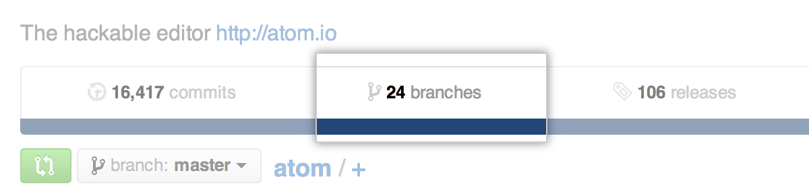
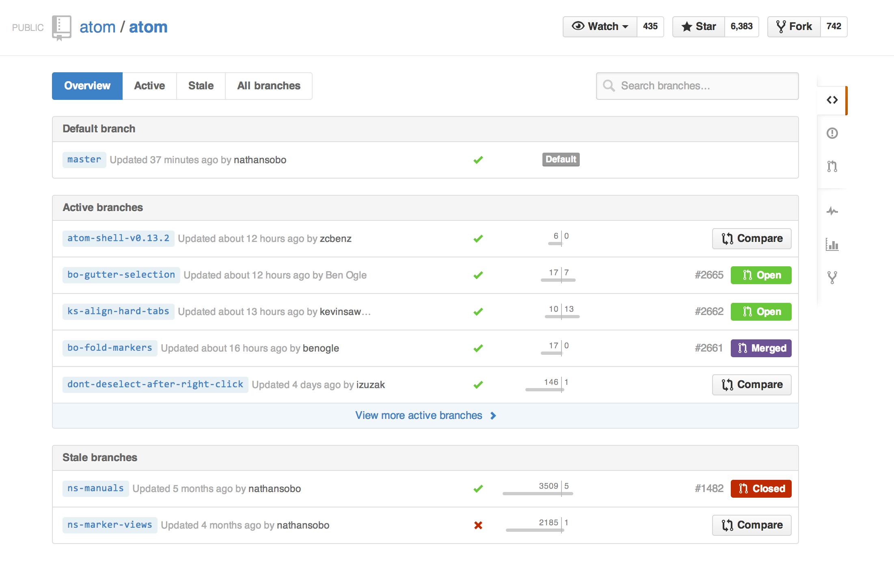
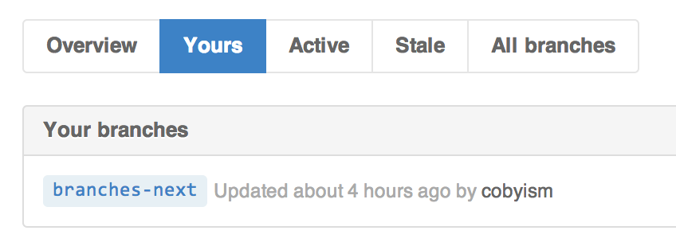
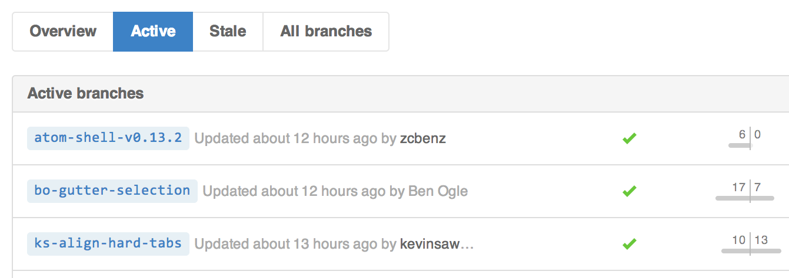
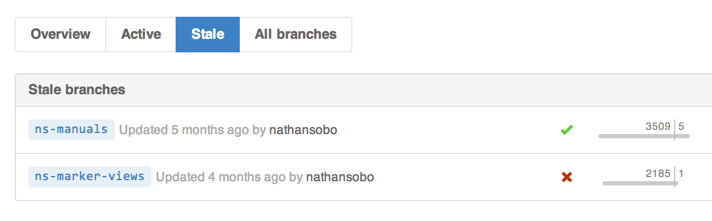
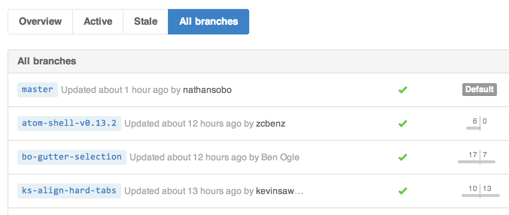
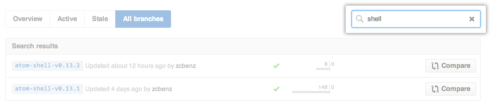
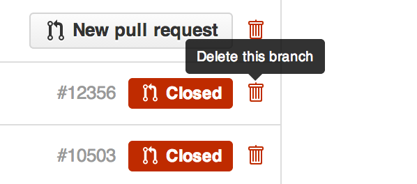
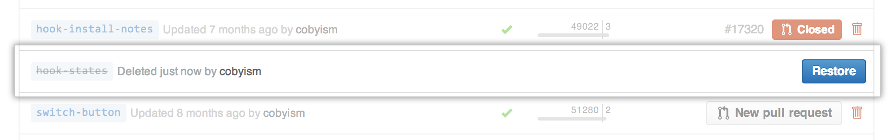

Branches are central to collaboration on GitHub, and the best way to view them is the branches page.
Viewing branches for your repository
You can view the branches page for any repository on GitHub by clicking Branches on the overview page.

This link will take you to an at-a-glance overview of the branches on this repository.

You can then use the navigation at the top of the page to view specific lists of branches (detailed below), so you can focus on just the branches you’re interested in.
Your branches

The your branches view will show you a list of all the branches that you’ve pushed to, with the most recent branches first. This section will only be available for repositories that you have push access to.
Active branches

The active branches list will contain all branches on the repository that have been pushed to within the last three months, ordered by the most recently pushed branches first.
Stale branches

The stale branches section is the opposite of the active branch list above, in that it lists all branches that have not been pushed to in the last three months, and they’re shown with the least recently pushed branch first. This section can be very helpful for showing which branches can probably be cleaned up. You can read more about deleting branches below.
All branches

Sometimes, you just need to be able to see every branch on the repository, so the all branches page has a completely unfiltered list that does just that. This page will show the default branch, followed by all other branches with the most recently pushed branch first.
Searching branches

If you’re looking for a specific branch by name, you can use the search box at the top-right of the branches page to get a list of all matching branches.
Deleting and restoring branches
Deleting branches
If you have old, unused branches, you may wish to clean them up by deleting them. Note that you can only delete branches if you have push access to the repository that contains them.
- Navigate to the repository you'd like to delete branches from.
- Click the Branches tab.
- On the right-hand side of the branch you wish to delete, click .

Note: You can only delete branches that don't have open pull requests, and that do not have open pull requests that rely on the branch (such as pull requests that target the branch, for example).
You can also delete branches from within pull requests. For more information see Deleting unused branches
Restoring a deleted branch
If you mistakenly delete a branch, you can immediately click Restore after deleting it to bring it back.

If you refresh the page, the Restore button will disappear. If the branch never had any pull requests associated with it, you will need to push the branch up again from the command line. If the branch had a pull request, you can navigate to the pull request and click Restore from there.